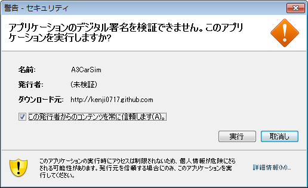

Main
Java Web Startによる配信
現在準備中です．
最初にプログラムが実行される前に以下の図のようなデジタル署名に関する警告が表示されます．

「詳細情報」でデジタル署名の指紋(フィンガープリント)を確認することができます．
- MD5フィンガープリント
- 2C:F9:21:19:D5:CD:60:56:16:F8:C5:7F:21:6F:B0:0A
- SHA1フィンガープリント
- E5:4B:19:39:87:2C:3B:14:6A:F7:62:0D:A8:79:4D:C6:20:08:0A:FE
64ビット版Windowsでの注意
64ビットWindowsを使用している場合，Java Web Start を用いたインストールを行う場合には64ビット版 Internet Explorerを使用して下さい．(デフォルトの Internet Explorerは32ビット版だと思います．) 64ビット版Internet Explorerは「スタート」ボタン →「すべてのプログラム」の中に「Internet Explorer(64ビット)」という名前で入っています．
MacOSXでの注意
MacOSXにはデフォルトでJava3DのVersion1.3.1がインストールされています．非常に古いバージョンでこのサイトぷのプログラムの起動に悪影響があります．以下の方法で無効化して下さい．
- /System/Library/Java/Extensionsを開く
- その場所にOldJava3Dという名前のフォルダを作成する．
- /System/Library/Java/Extensionsに入っている
以下のファイルを新しく作成したOldJava3Dフォルダに
移動しておく．
- j3daudio.jar
- j3dcore.jar
- j3dutils.jar
- vecmath.jar
- libJ3D.jnilib
- libJ3DAudio.jnilib
- libJ3DUtils.jnilib
古いJava3Dが必要になったら，移動したファイルを元の場所に戻せばもとどうりになります．